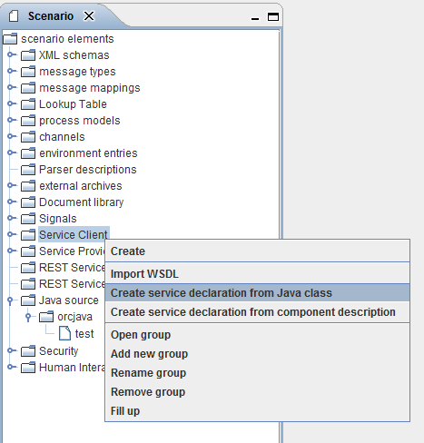
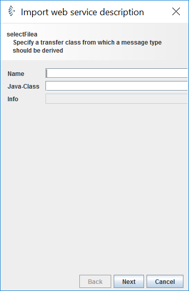
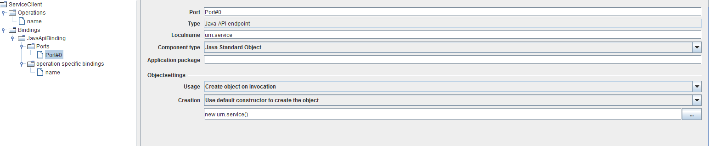
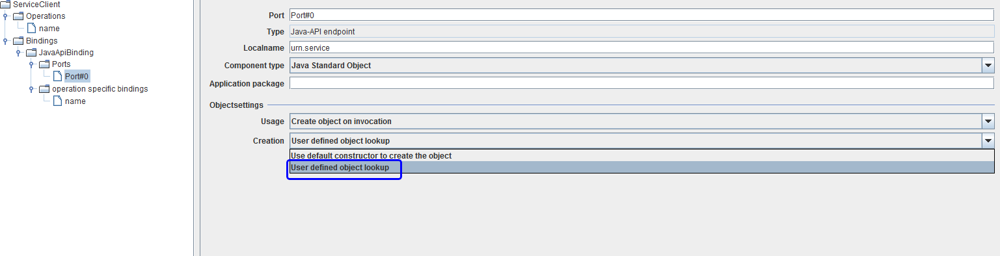

JavaApiBinding

Topic content
Description
Java API Binding is a way to provide a Service declaration (client) written in Java. The service is defined as an Java interface and a Java Class that implements the service interface.
The only supported exchange pattern is request/response or just request.
There are two types of Java API Bindings: Java Standard Object and Extension Components. Both are provided in jar files.
Creation
If you have configured everything right (see Configuration).
1. You simply right click on Service Client. In the context menu you choose Create service declaration from Java Class .

2. Enter a name and the name of your service Interface. If Orchestra finds the interface, ok appears in the info area of the dialog. Just click okay and Orchestra creates all necessary message types and operations for you.

2. Next add a Binding to the service client. Just right click on Bindings, choose Add Binding, select then JavaApiBinding.
3. The Binding is now created for you. In order to use it navigate in the Bindings tree to Bindings/JavaAPIBinding/Ports/Port#0.

4. In the Objects settings change Creation to User defined object lookup.

5. Then change the new Statement in the next line to the name of the class which implements your service interface.
6. Done. Now you can test your service. First generate an input XML file to be used later in the test panel. Right click on the request message type choose create XML from the context menu. An editor window opens. Save the XML file to disk. Click on the flash in the toolbar. The test window appears.
7. Change the port from internal to Port#0. Click on the request parameter in the value column.
8. A file dialog appears select the previously created message XML file. Press okay. Press test button.
9. If everything is okay you can click on the "..." Button in the value column of the response parameters table.
10. The message will be displayed. Done. Now you can use it like any other service client.
To create a service client from a component using the new Orchestra component framework API.
1. right-click on service client and choose create service declaration from component description.
2. In the next window just choose the component you want. click next and then your done.
3. To test the component do the same as described before
4. Save request message type to XML, open service endpoint test panel, change port to ServiceInvocation, load request message.
5. Press test and check response message. Done.
Configuration
For the standard Java Object approach just the class files need to be provided in a jar file. The Jar has to be included using External Archive in the Scenario Tree. Just right click on it and add archive (classes and resources).
The folder where Orchestra looks for the component jar files can be configured in the corresponding environments_settings.xml
The entry looks like this:
<group name="ExtendedJavaComponents">
<parameter name = "libExt.path" value = "c:/temp/libextv2" />
</group>
Jar Files provided in <libExt>/general folder are visible for all parts of Orchestra, e. g. Java Mappings, Java Channels etc.
This is another possibility to make external libraries available for Orchestra. Jars in any other folder use their own separate class loader and the only way to access these classes is via the service client approach.
To provide your new component just generate a new folder (not general) put your component jars and required third-party libraries inside and start Orchestra and you are ready to use them. The components class loader is completely separated from the system class loader and so the component lives in its in own sandbox and does not interfere with the Orchestra system class loader in any way. This way it is possible to use different versions of your component with its own set of third-party libraries without any problem.